TRMS系统硬件产品介绍及安装说明（失电报警）
失电报警硬件产品介绍
1. ETP-I型采集器
1) 外型尺寸
245mm×70mm×40mm（长×宽×深）
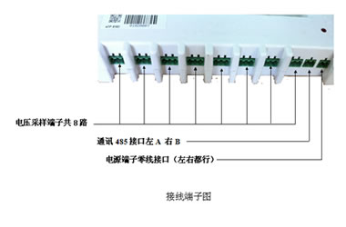
2) 接线端子说明
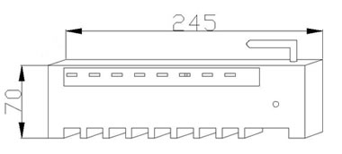 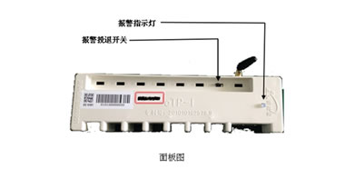
2. ETP-I汇集器
1) 外型尺寸
245mm×70mm×40mm（长×宽×深）
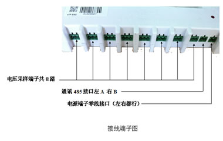
2) 接线端子说明
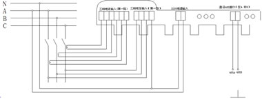
3. 连接电缆
1) 电压采样线
电压采样线用于3相电压采集
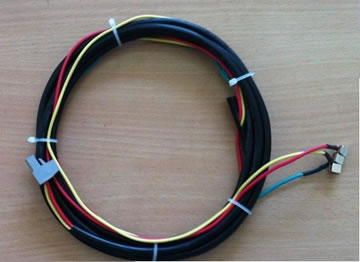图1（电压采样线
2) 通讯电缆
通讯电缆是采集和采集器、采集器和汇集器之间通讯通道。
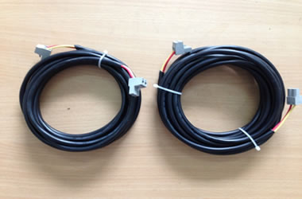图2（通讯电缆）
3) 电源电缆
电源电缆是采集器的工作电源线。
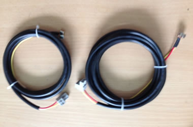图3（电源电缆）
现场安装、调试
提供采集器、汇集器、连接电缆和其他附件，客户可以快速完成现场安装。
1. 采集器安装
1) 将采集器吸附在开关柜侧面
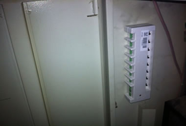
2) 插上电压采集回路插头
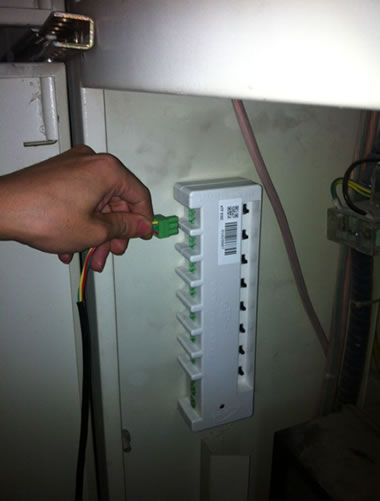
3) 电压采样线安装完成
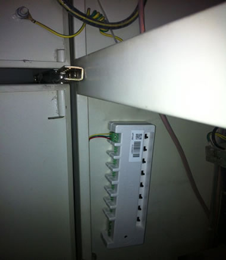
4) 插上工作电源插头
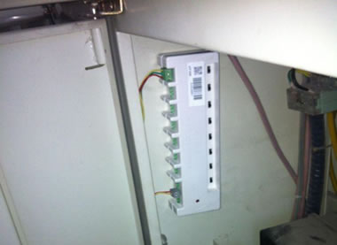
5) 插上通讯线插头
采集器侧一个回路接线完成。（如有多条回路只要增接电压采样线即可）
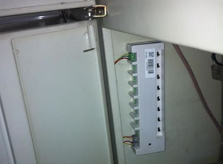
2. 采样电压及采集器工作电源的搭取
1) 将电压取样磁钢按相序吸附在开关下桩头螺丝上
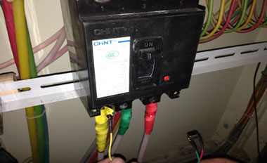
2) 3相3颗磁钢都吸附到位
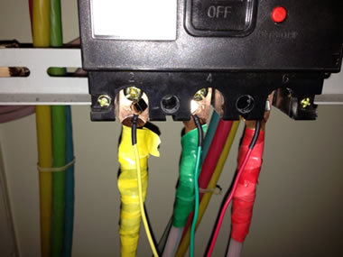
3) 将采集器工作电源零线吸附在零排上

3. 汇集器的安装
1) 汇集器电源线插接
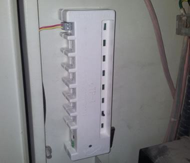
2) 汇集器电源火线搭接
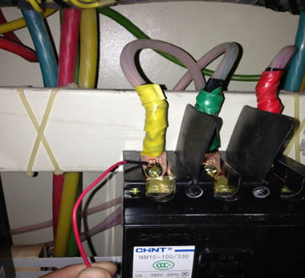
3) 汇集器电源零线搭接
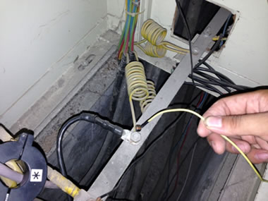
4) 汇集器通讯线插接
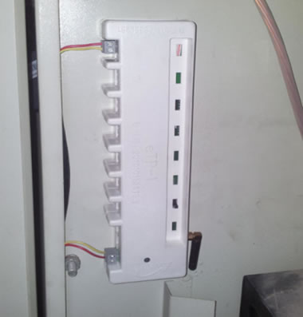